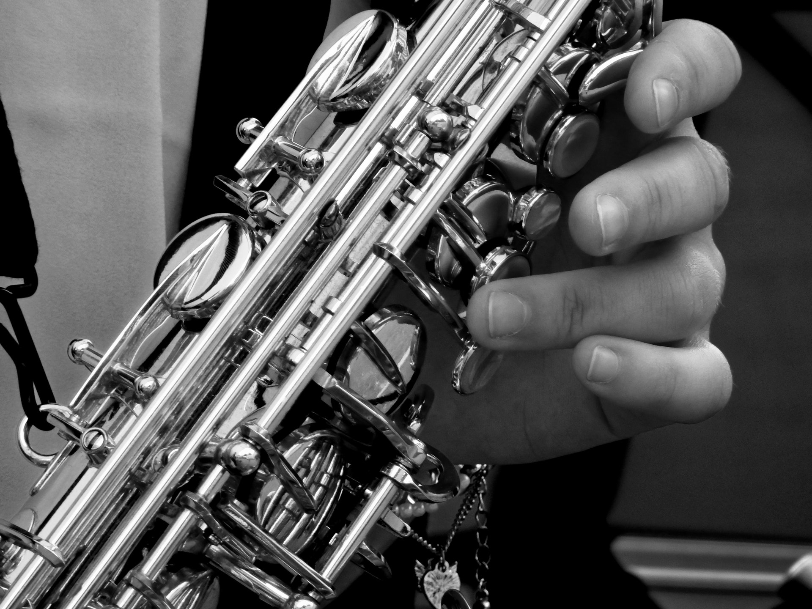

-

Serving the Silicon Valley
The goal of my teaching is to impart to my students an appreciation, understanding and a love for music.
Contact Me -

Solid Foundation
Whether the student is a beginner or a more advanced player, musical skills and technique must be built on a “solid foundation” to achieve musical mastery in every technical aspect and at every playing level.
Read More -
Years of Professional Experience
Utilizing my “solid foundation” method, my students are given the best opportunity to be successful in their musical training and development.
Learn More